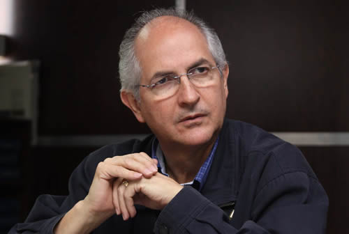

Real Chubut - Agencia de Noticias


Antonio Ledezma: “¿Qué más testimonios necesita el mundo para terminar de caracterizar el régimen de Maduro como lo que es, una narcotiranía?”

El líder opositor venezolano, en diálogo con Infobae, afirmó que la ejecución extrajudicial del ex policía öscar Pérez tiene que ser un punto de inflexión para la comunidad internacional. Además, reveló su conversación con el presidente argentino Mauricio Macri y detalles desconocidos de su fuga
Antonio Ledezma está inmerso en un largo periplo desde el 17 de noviembre pasado, cuando logró escapar del arresto domiciliario que le había impuesto el régimen de Maduro. Viene de Perú, y de aquí, Argentina, partirá a Washington y luego a Europa. Su misión, dice, es contar lo que viven los venezolanos, denunciarlo y recabar el mayor apoyo internacional posible. El dirigente de Alianza Bravo Pueblo llegó a Buenos Aires con su mujer, Mitzy Capriles, y con ella visitó al presidente Macri. En diálogo con Infobae detalló punto por punto el calvario que se vive en Venezuela, un país cuya crisis es ya inocultable. "Es insólito que en uno de los países más ricos del mundo, que hace pocos años manejó más de 1.500 millones de millones de dólares —¡10 veces más del presupuesto asignado de la UE!— ahora veamos gente muriendo de malaria. Habla de gobernantes no solo incapaces, sino indolentes y corruptos", dice enojado.
Durante la entrevista, reveló el contenido de su encuentro con Macri, analizó la situación de la oposición venezolana y contó detalles desconocidos de su fuga: "Tuve que hacer ejercicios para cambiar la voz y que no me reconocieran".
—¿Cómo fue el encuentro con el presidente Mauricio Macri?
—Fue un reencuentro con un amigo. Nos conocimos cuando cuando él era jefe de Gobierno y yo alcalde metropolitano de Caracas, hasta que me hicieron preso. Nos sentimos satisfechos porque con este gesto de recibirnos demuestra que no es indiferente, se muestra preocupado y ocupado de ver cómo se le buscan soluciones a las dificultades que amenazan la paz en Venezuela, pero también a nuestro hemisferio.
—¿Qué le pidió?
—Que en América Latina se dicten sanciones personalizadas, como en Canadá, los EEUU y la UE. Le conté sobre mi periplo en Francia, Italia; y en todos estos lugares están tan preocupados que recién la UE dictó medidas sancionatorias contra individualidades. Y le pedí que él lidere que en América Latina se homologuen esas sanciones, que no son contra el pueblo —que bastante martirio tienen sobre sus espaldas—, sino contra individuos relacionados con el narcotráfico, con el terrorismo internacional o con los embadurnados en escándalos de corrupción
La verdadera acción revolucionaria no es darle al pobre una bolsita de alimento para que sobreviva
—Luego de las sanciones de la UE, el gobierno de Maduro reaccionó con la convocatoria a elecciones en condiciones irregulares, ¿fueron especialmente dolorosas para el chavismo?
—Es que el régimen de Maduro está acostumbrado a la impunidad. Es un régimen que maneja los tribunales, convierte los juzgados en paredones de fusilamiento para acorralar a la disidencia; porque en Venezuela opinar es un delito. Cree que como controla los tribunales y la fiscalía, puede controlar a los organismos internacionales. Pero resulta que esos organismos no responden a caprichos de nadie, sino a principios como la democracia, la libertad, el respeto de los derechos humanos. Y precisamente eso le planteamos a Macri y a la comisión de relaciones exteriores del Parlamento que preside Cornelia Schmidt-Liermann, que deberían hacer una exhortación a la Corte Penal Internacional para que tome con mayor interés las incidencias que allí se tramitan, porque hay pruebas de que de Maduro para abajo son violadores de derechos humanos. La última prueba es la ejecución extrajudicial de siete seres humanos. Es fundamental que la voz de los demócratas se haga sentir.
—Se refiere a la muerte de Óscar Pérez, el ex policía que se rebeló contra el chavismo, ¿ese fue un punto de inflexión?
—Hay que convertir esa tragedia en una pregunta: ¡¿Qué más testimonios necesita el mundo para terminar de caracterizar el régimen de Maduro como lo que es, una tiranía, o más aún, una narcotiranía?! Porque los capitostes del régimen venezolano están coludidos con el narcotráfico. De Maduro para abajo, hay señalamiento de las operaciones de narcóticos que tienen el apoyo de altos funcionarios venezolanos. Una élite militar corrompida que hace grandes negociados con el tráfico de drogas, de combustibles, con el contrabando en la frontera… Le doy un dato: la oficina de Viena que trabaja para Naciones Unidas ha certificado que el 60% de la cocaína que circula en Europa sale del territorio de Venezuela. En Venezuela se habla de altos funcionarios que tienen vínculos con el terrorismo internacional, con Hezbollah, por ejemplo. Se acredita a terroristas con pasaportes legítimos y salen como buenos ciudadanos por la frontera venezolana, y se transforman en esos hombres-bombas que se explotan, haciendo añicos la paz en París, Múnich o Inglaterra. El problema de Venezuela no es solo nuestro. El pueblo ha entregado su vida. El pueblo ha derramado su sangre. Nos acribillan. Estamos invadidos por más de 30 mil cubanos metidos en los cuarteles. Operan mafias, la de los cárteles de la droga y los que manejan los sicarios y los secuestros. El régimen tiene relación con la guerrilla colombiana de las FARC y con el ELN. Ellos actúan a sus anchas en Apure, Táchira, Zulia y Barinas, en cuatro estados venezolanos. Y sí, después del acribillamiento de Óscar Pérez y otros seis venezolanos, se inició otro capítulo escrito con sangre.
—En estos momentos hay un éxodo de venezolanos…
—Es un éxodo masivo consecuencia de la crisis humanitaria. Hambruna generalizada, porque no hay bienes de consumo. El régimen destruyó el aparato productivo del país. Vemos las ruinas de nuestro sistema agrícola-agropecuario porque el régimen, bajo el lema de que "ser rico es malo", auspicia la lucha social, la expropiación de industrias, empresas, fábricas. Y por lo tanto no producimos nada. Y, además, no hay divisas: hasta hace tres años, las importaciones eran equivalentes a 70 mil millones de dólares, al día de hoy no pasan de 10 mil millones de dólares. Se agotaron las reservas en oro, no se sabe el monto real de las reservas internacionales, tenemos un país hipotecado —solo por concepto de servicios de la deuda ya se entregaron más de 70 mil millones de dólares—. Bajo tierra tenemos las reservas petroleras probadas más grandes del mundo, somos un país rico en gas, en hierro, en diamante, en oro… ¡Es insólito que haya gente que se muera de hambre, que se muera porque no hay medicamentos!
Las FARC y el ELN actúan a sus anchas en cuatro estados venezolanos
—¿Cómo se llega a este escenario que describe? ¿Por corrupción, incapacidad…?
—Hay causas muy bien batidas. Es una mezcla de incapacidad, porque se han escogido funcionarios que no han estado a la altura. La empresa petrolera era una de las más prestigiosas, y Hugo Chávez —en un arrebato delirante, propio de caudillos totalitarios— despidió a más de 20 mil trabajadores formados en las mejores universidades del mundo, dentro y fuera de Venezuela. Ese talento humano estaba representando en ingenieros, matemáticos, expertos en mantenimientos de refinerías, en expertos en negociación, y fueron expulsados de PDVSA y hoy están en Qatar, en Arabia Saudita, en México, en Brasil, en Colombia o aquí en Argentina. Después de este descalabro, estamos produciendo menos de 1.800.000 barriles diarios… Y sobre esa deuda negra de PDVSA, el Gobierno no ofrece cifras, como tampoco ofrece sobre las enfermedades. Es insólito que en uno de los países más ricos del mundo, que hace pocos años manejó más de 1.500 millones de millones de dólares —¡10 veces más del presupuesto asignado de la UE!—, ahora veamos gente muriendo de malaria. Habla de gobernantes no solo incapaces, sino indolentes y corruptos. Porque hay 600 mil millones de dólares, de capital robado, que está depositado en distintos paraísos fiscales. De hecho, ya estamos organizando equipos cazafortunas para poder repatriarlos, en su oportunidad, y ponerlos en manos de un nuevo gobierno.
—¿Por qué la oposición no logra unidad en este escenario?
—Surgen discrepancias que tenemos que ver cómo superamos. Recientemente, en diciembre de 2015, gracias a la unidad de todos los factores políticos que veníamos luchando contra la dictadura alcanzamos una rutilante victoria, el pueblo nos dio la mayoría calificada en el Parlamento. Pero estamos peleando con el diablo. Nosotros derrotamos al diablo porque este régimen de delincuentes, de demagogos, de caudillos extraviados en este nuevo tiempo, representan una política diabólica, por eso nuestra lucha debe ser persistente. Y hasta el 16 de julio de 2017, que convocamos a un plebiscito, mantuvimos una política de coherencia. Lamentablemente después surgieron desavenencias que debemos corregir para retomar una lucha de oposición auténtica; y eso implica estrategias y objetivos. El primordial es salir de la dictadura y después hablar de escoger candidatos presidenciales.
Vamos a necesitar equipos cazafortunas para repatriar los más de 600 mil millones de dólares que ha robado el régimen de Maduro
—¿Cómo se sale?
—Con una oposición auténtica, con una oposición con dirigentes que actúen con coherencia, con apoyo de la comunidad internacional. Porque los venezolanos acusamos un estado de necesidad. Somos víctimas de una represión sistemática y masiva; y según la legislación internacional, cuando los regímenes persiguen y atropellan a sus ciudadanos mediante medidas de represión masivas y sistemáticas, deben activarse, por ejemplo, los Tratados de La Haya de 1907, los acuerdos de Ginebra, la declaraciones de las Naciones Unidas.
—Cada vez que un organismo o instancia internacional reacciona, el gobierno de Maduro lo abandona o intenta abandonarlo. Pasó con la CIDH, con la OEA…
—Es hay que hacer un debate claro del verdadero alcance del principio de autodeterminación de los pueblos. Hay gobernantes que se escudan sacando la espada del principio de la autodeterminación, pero ese principio no es para proteger bandas delincuenciales, no debe servir para amurallar a tiranos que masacran a los ciudadanos que discrepan, no es para que trafiquen drogas o armas, o para amparar a terroristas. Es más que justificado que, en estas circunstancias, el principio de Injerencia Humanitaria tenga preeminencia sobre el de autodeterminación de los pueblos. Porque se ufanan de la "revolución" cuando lo que han hecho es hundir al pobre en la miseria. Ayudar al pobre no es darle una bolsita de alimento para que el pobre sobreviva en la pobreza. La verdadera acción revolucionaria de un Gobierno que quiere justicia social es darle una mano para sacarlo de la pobreza, con un empleo bien remunerado, buena educación, servicios de salud, y eso no existe en Venezuela.
—¿Qué pasa si algunos opositores deciden presentarse a las elecciones presidenciales convocadas por la Asamblea Nacional Constituyente?
—No quiero caer en esa hipótesis porque lo responsable es actuar de manera acompasada, el pueblo merece que tengamos coherencia.
—Algunos partidos salieron a validar firmas el último fin de semana….
—Son decisiones aisladas. Queremos que los pasos que rompen el compás de la unidad no terminen haciendo migajas esta plataforma (por la MUD) que es necesaria para darle pelea a la tiranía.
—¿Cómo decidió huir, escaparse…?
—El instinto que tiene todo ser humano. Lo venía pensando, como todo preso. Cuando ingresé a la prisión militar, veía las rejas, los barrotes, me agarraba la madrugada despierto, y uno siempre piensa, porque es instintivo el derecho a la libertad. Y durante el arresto domiciliario, lo mismo. Pero cuando me llegaron las noticias de que había un plan macabro para secuestrarme, desaparecerme y que el Gobierno después le atribuyera ese secuestro a un supuesto grupo paramilitar colombiano, fue que planifiqué liberarme. Porque más que fugarme, lo que hice fue liberarme. Fue una decisión de muchos riesgo, pero así es la vida de un dirigente político, se asumen riesgos. Si usted es dirigente y está enfrentando una dictadura, sabe que corre el riesgo de ser víctima de un carcelazo, como lo padecía yo, o de ser ejecutado, como lo fue Óscar Pérez.
Me fugué, recorrí más de 1.000 kilómetros, más de 20 horas continuas, hasta que llegué al punto en que el puente separa la tierra venezolana del territorio colombiano. Fue una apuesta con más del 80% de posibilidades de que me atraparan, me asesinaran, pero dimos ese paso y logré poner pie en territorio colombiano, que me ofreció solidaridad y, luego, me trasladé a Madrid, donde me estaban esperando mi esposa y mis hijas.
—Sin poner en riesgo a quienes lo ayudaron, ¿cómo fue ese trayecto?
—Me encontré con retenes policiales, algunos los sorteamos con la ayuda de Dios, otros por ejercicios previos. Yo, incluso, hice ejercicios previos de cambio de voz, porque me decían que mi voz es muy reconocible, que si hablaba me iban a reconocer. La tuve que cambiar. Y también tuve ayuda de militares efectivos. Ya llegando al puente, yo iba mezclado con miles de personas, y una señora, cuando me faltaban 15 metros —que me parecieron kilómetros— me dice: "¡Ledezma!". Sé que lo hizo de buena fe e instantáneamente comprendió la situación en la que me encontraba y no hizo más comentarios. Un guardia nacional que yo tenía a mi mano derecha escuchó, me vio y yo seguí… Mantuve la calma, mantuve la serenidad y, ya en territorio colombiano, un funcionario me reconoció y me dijo: "Bienvenido a la libertad". Por supuesto que respiré y suspiré, porque volví a respirar una atmósfera de libertad.
Fuente: Infobae